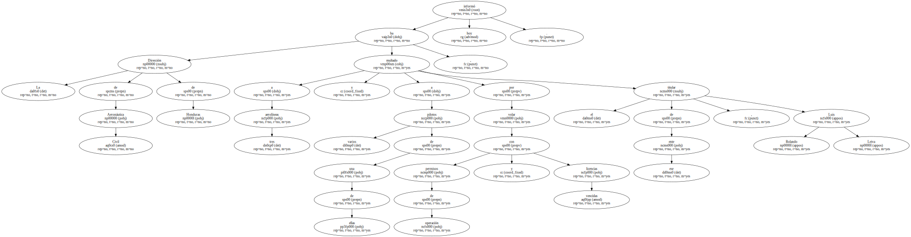
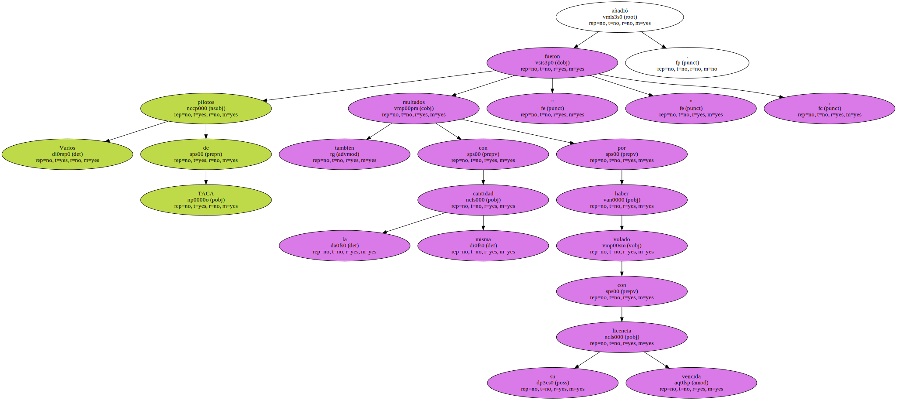
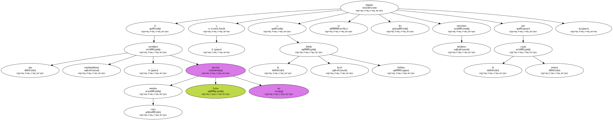
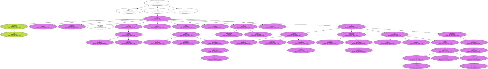
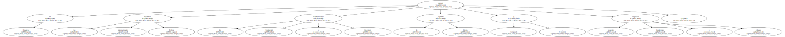

La Dirección de Aeronáutica Civil de Honduras ha multado a tres aerolíneas y a varios pilotos de una de ellas por volar con permisos de operación y licencias vencidas , informó hoy el titular de ese ente , Luis Rolando Leiva.
La empresa Transportes Aéreos Centroamericanos ( TACA ) fue multada hoy con 1.000 lempiras ( 669 dólares ) , porque " ha volado por un espacio de diez días con un permiso provisional para operar " , dijo el funcionario a radios locales.

Varios pilotos de TACA también fueron multados con la misma cantidad " por haber volado con su licencia vencida " , añadió.
A una aerolínea estadounidense , cuyo nombre Leiva no precisó , y a la local Isleña Airlines se les impuso sanciones similares por la misma causa.
Leiva afirmó que Aeronáutica Civil " está vigilando estrechamente a las líneas aéreas " ante las continuas quejas de los pasajeros , especialmente de TACA , por el constante extravío de equipaje , suspensión abrupta de vuelos o cancelación de cupos , aunque el usuario haya comprado su billete.
En Honduras operan las aerolíneas internacionales TACA , las estadounidenses Continental y American , la española Iberia y pequeñas empresas hondureñas y cubanas.
